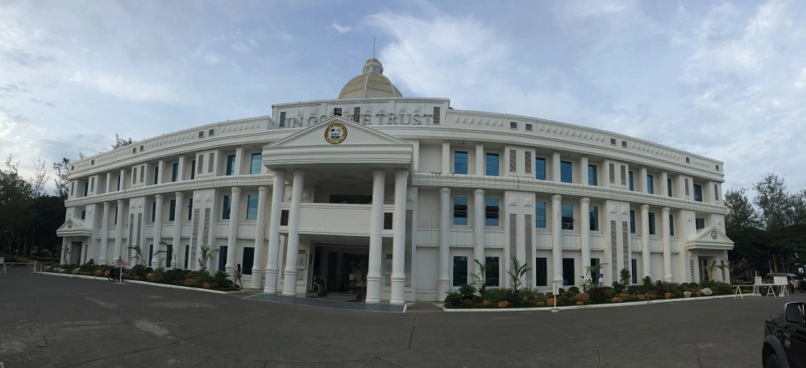

QuickLinks
- Vision Mission&Philosophy
- History
- Chairman’sMessage
- Principal’sDesk
- SchoolManagingCommitteeMembers
- Faculty
- Rules&Regulations
- Rules&Regulations
About us
- Education plays a vital role in our lives. It is not only learning of subjects, theories and principles that govern the world but also expanding our horizons and beliefs and inculcation of values that become a part of our personalities for our entire life time.
- The SPS, is a unique educational institution founded in the year 1984. It is centrally located in the Secunderabad area on a sprawling 2 ½ acres campus with the sole aim of imparting quality education for all getting ready for the future.
- The school is affiliated to C.B.S.E Board New Delhi. Subjects are taught as per the C.B.S.E Board syllabus. We believe in nurturing our students with values and educational methods that encourage them to discover and unfold their personality, in the best way.
- The SPS offers its students profound subject knowledge, basic skills and intelligence. The school understands the world of the children who can think, question and learn to grow as our teaching fraternity is habituated to follow them adopting play-way methods of teaching.
- Our innovative ideas enhance their intellect and help aspire and learn at fast pace and complete among themselves with case. With the state-of-the-art infrastructure and equipment we cater to the needs of students who can flourish with communicative environment to learn fast and acquire knowledge.